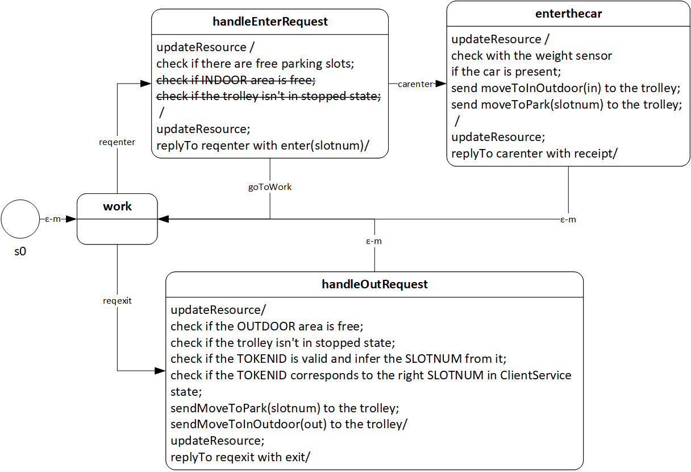
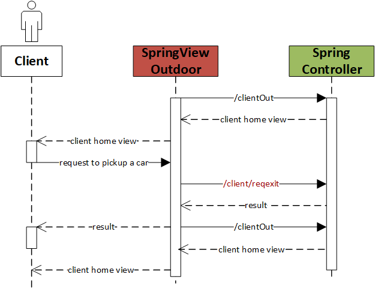

Introduction
Hereafter we report a copy of the sprint backlog for this specific sprint:
| Must Have |
Should Have |
Could Have |
The robot must accept a client request if it is available (F2-NF5)
The client must successfully submit a TOKENID to begin the car collect phase (F7)
The system must correctly infer the parking slot from the provided token (F8)
The system must successfully instruct the trolley to reach the correct parking slot, collect the car and bring it to the OUTDOOR area (F9)
|
The map should be updated with the movements of the robot (NF2)
The robot should not walk over the parking slots (NF3)
The robot should correctly return to the home position if idle (NF7)
|
The system is not supposed to instruct the robot to move the car from the parking slot to the OUTDOOR area if it is already occupied by a car (F6)
The ParkingServiceGUI is supposed to show a prompt to the client for him to submit the token (F7)
|
This sprint could leverage and reuse some components created in the previous sprint so
four days should be enough.
Project
Starting from the
logic architecture derived during the analysis phase and considering the results of
Sprint1 let's now "zoom-in" or update
the components we require for this sprint: SpringController/View, ClientService, Trolley and SonarController and simulator. Furthermore, we want to specify that all what we developed in Sprint1 stand also for this sprint and only changes and updates to it are hereby presented.
ClientService
The ClientService as a Moore's Finite State Machine (cont.d)
The ClientService actor is here updated with the code to implement the handleOutRequest state as described in the attached image. To reuse the same high-level message type to instruct the trolley to go to the INDOOR and OUTDOOR area,
the moveToIndoor dispatch used during the Sprint1, is replaced by a moveToInOutdoor dispatch. The trolley will distinguish between the two cases using the payload of the message.
The barred actions are not part of this sprint and will be developed in Sprint3.
|

|
SpringController/View
Using RESTful APIs for the M2M interaction (cont.d)
The REST-API documentation has been updated and can always be found at REST-APIdocs.html.
|

|
Testing
Sprint Summary
Summary table
| Final Sprint Architecture |
Executable Model |
Tests |